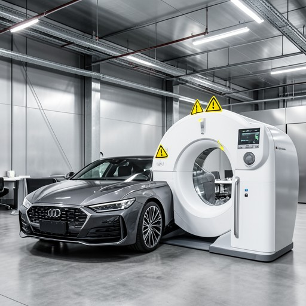

样本9 · 系统B
中文友好版完整轨迹。系统提示和工具 schema 已移除；工具名、坐标和图像 ID 保持原样。
评分建议
请结合任务、完整轨迹、中间图和最终图，分别评价结果一致性与过程合理性。
最终图

全部图片

纯净轨迹
1. User
创建一张真实工业摄影风格的办公室工作空间图，包含一辆汽车和一台医疗扫描仪。目标是强调汽车与医疗扫描仪之间的功能关系：把两者放在画面下方区域，使一个物体部分遮挡另一个物体；也可以在物体附近添加警示图标来强调它们的交互。最终图应清楚表现这两个元素在工作空间中的功能联系。
原始请求
Create a realistic industrial photography image of an office workspace that includes a car and a medical scanner. The goal is to emphasize the functional relationship between the car and the medical scanner. You can achieve this by adjusting the position of the car and the medical scanner in the lower area of the scene, ensuring that one object partially occludes the other. Additionally, you may add warning icons near the objects to highlight their interaction. The final image should clearly show how these two elements are related in a functional manner within the workspace.
2. Assistant
中文阅读提示：模型在这一轮说明观察、判断或下一步计划。完整原文见展开项。
assistant 原始说明
I need to create a realistic industrial photography image of an office workspace that includes both a car and a medical scanner, with a functional relationship emphasized through their positioning and partial occlusion. Since no input image is provided, I must start by generating the scene from scratch using ImageGeneration. I will describe a detailed prompt that includes the office workspace, the car, the medical scanner, their interaction (partial occlusion), and warning icons to highlight their functional relationship. The style should be realistic industrial photography with attention to lighting, shadows, and depth to convey a professional and functional environment.
工具调用：ImageGeneration（生成基础图像）: 生成提示词见原始参数
原始 JSON 参数
{
"name": "ImageGeneration",
"arguments": {
"prompt": "Realistic industrial photography of a modern office workspace with a sleek, high-tech car positioned in the lower left area and a large medical scanner (like an MRI or CT machine) in the lower right area. The car is partially occluding the medical scanner, with the front wheel and side panel overlapping the scanner's base. The scene includes warning icons (yellow triangular signs with exclamation marks) placed near both objects to emphasize their interaction. The workspace has clean, metallic surfaces, industrial lighting, and a professional atmosphere. The image is shot from a slightly elevated angle to show the relationship between the car and the scanner clearly. High detail, 8K resolution, photorealistic style."
}
}3. Tool
图像生成完成。[图片1] Generated image for prompt: Realistic industrial photography of a modern office workspace with a sleek, high-tech car positioned...(truncated)...evated angle to show the relationship between the car and the scanner clearly. High detail, 8K resolution, photorealistic style. [Output image saved as: ImageGeneration_0. now imglist is {ImageGeneration_0}]原始 tool 返回
[图片1] Generated image for prompt: Realistic industrial photography of a modern office workspace with a sleek, high-tech car positioned...(truncated)...evated angle to show the relationship between the car and the scanner clearly. High detail, 8K resolution, photorealistic style. [Output image saved as: ImageGeneration_0. now imglist is {ImageGeneration_0}]4. Assistant
中文阅读提示：模型在这一轮说明观察、判断或下一步计划。完整原文见展开项。
assistant 原始说明
I have generated the initial image (ImageGeneration_0) showing a car and a medical scanner in an industrial workspace with partial occlusion and warning icons. However, upon visual inspection, the car is positioned to the left of the scanner, and the occlusion is minimal—only the front wheel slightly overlaps the scanner's base. The warning icons are present but not clearly emphasizing the functional relationship. To better achieve the goal, I need to adjust the positioning so that one object more clearly occludes the other, and perhaps enhance the warning icons for greater emphasis. I will use ImageEdit to modify the scene, specifically adjusting the car's position to increase occlusion with the scanner and enhancing the warning icons for better visibility and impact.
工具调用：ImageEdit（执行图像语义编辑或局部修正）: 输入图像: ImageGeneration_0；编辑要求见原始参数
原始 JSON 参数
{
"name": "ImageEdit",
"arguments": {
"image": "ImageGeneration_0",
"edit_prompt": "Move the car slightly to the right so that its front wheel and side panel more prominently occlude the base of the medical scanner. Increase the size and brightness of the warning icons near both the car and the scanner to make them more noticeable and emphasize their functional interaction. Ensure the industrial lighting and shadows are adjusted to maintain realism."
}
}5. Tool
图像编辑完成。[图片1] Edited image with instruction: Move the car slightly to the right so that its front wheel and side panel more prominently occlud...(truncated)...iceable and emphasize their functional interaction. Ensure the industrial lighting and shadows are adjusted to maintain realism. [Output image saved as: ImageEdit_0. now imglist is {ImageGeneration_0, ImageEdit_0}]原始 tool 返回
[图片1] Edited image with instruction: Move the car slightly to the right so that its front wheel and side panel more prominently occlud...(truncated)...iceable and emphasize their functional interaction. Ensure the industrial lighting and shadows are adjusted to maintain realism. [Output image saved as: ImageEdit_0. now imglist is {ImageGeneration_0, ImageEdit_0}]6. Assistant
中文阅读提示：模型在这一轮说明观察、判断或下一步计划。完整原文见展开项。
assistant 原始说明
The edited image (ImageEdit_0) now shows the car positioned more to the right, resulting in a more prominent occlusion of the medical scanner's base by the car's front wheel and side panel. The warning icons have been increased in size and brightness, making them more noticeable and effectively emphasizing the functional relationship between the two objects. The industrial lighting and shadows appear consistent with the scene, maintaining realism. The overall composition clearly illustrates the interaction between the car and the medical scanner as intended. I will now finalize the task as the goal has been achieved.
模型结束：<Terminate>